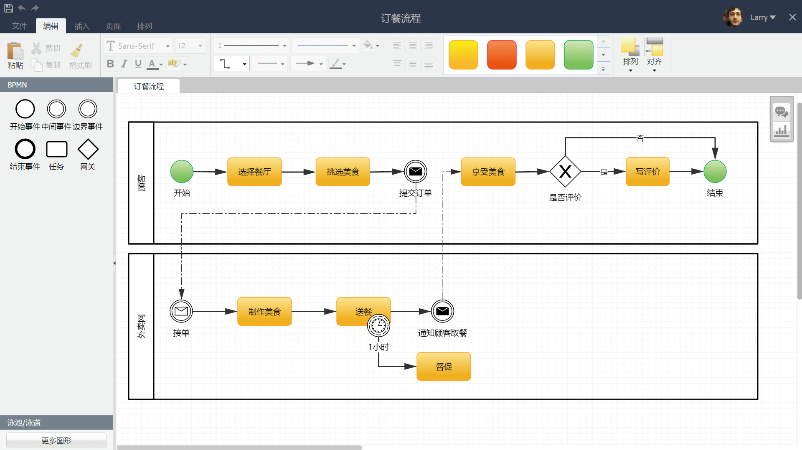

4.3 BPMN流程图
BPMN2是近几年制定的业界高度认可的一套世界级流程建模标准，拥有极强的流程描述能力，BPMN2 通常用于梳理企业支持流程。
参照EVC战略流程图的建模方法，您只需要在新建流程文件时选择【BPMN流程图】流程模板，那么您就可以使用BPMN图形来设计具体流程了。BPMN 流程图示例：

Created with the Personal Edition of HelpNDoc: iPhone web sites made easy